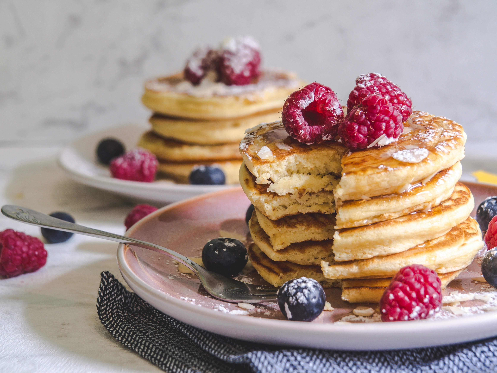

Home
Pancakes

Pancakes are a breakfast favorite light, fluffy, and simple to make with basic ingredients. They’re perfect for weekend mornings or anytime you’re craving a quick treat.
Top them with maple syrup, fruit, whipped cream, or even chocolate chips for an extra special meal.
Ingredients
- All-purpose flour
- Baking powder
- Sugar
- Salt
- Milk
- Egg
- Butter (melted)
- Vanilla extract (optional)
Steps
- In a bowl, mix flour, baking powder, sugar, and salt.
- In another bowl, whisk together milk, egg, melted butter, and vanilla extract.
- Combine the wet and dry ingredients, stirring gently to form a smooth batter.
- Heat a non-stick pan over medium heat and lightly grease it.
- Pour small amounts of batter onto the pan to form pancakes.
- Cook until bubbles form on the surface, then flip and cook until golden brown.
- Serve warm with your favorite toppings.